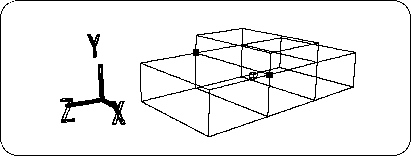
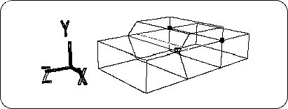
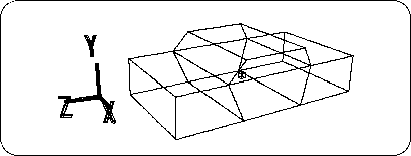
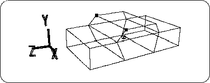
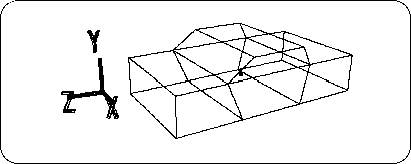
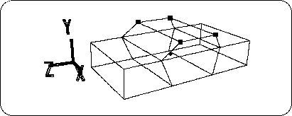
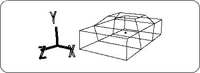

Return to previous page | Return to menu | Go to next page
Use [Trans] in the TAG mode to correct the roof to the position and shape of an automobile.
First, let's make the points in the figure TAG (Figure 3-8).

Set themode to TAG mode and select the [TransZ] icon to move in the + Z direction (the degree of movement is such that the Z value of the point is about 1.0 m). Please adjust it by looking at the Right window.) Then remove the TAG.
Next, set the point in the figure to TAG (Figure 3-9).

Select the[TransZ] icon and move it in the -Z direction. (The degree of movement is the right window so that the Z value of the point is about -0.85 m.) Please adjust it by watching). When finished, remove the TAG (Figure 3-10).

In addition, set the two points shown in the figure below to TAG (Figure 3-11).

Click the[TransZ] icon to move in the -Z direction (Figure 3-12). (The degree of movement should be adjusted in the right window so that the Z value of the point is about 0.5 m.)

Finally, shape the roof. Set the four points in the figure to TAG (Figure 3-13).

Check that you are in TAG mode, click the [ScaleX] icon, and move the mouse while pressing the button to reduce the distance between the points in the X direction. .
The result is shown in the figure (Figure 3-14).
